To Your Emergence
AI Native 시대를 살아갈 그대에게
불멸의 그대에게
이호정 Benedict
카카오
AI와 함께 살아가고 일하는 새로운 방식을 탐구하며, 앞으로 펼쳐질 세상의 새로운 연결점들을 찾고 있습니다.
AI Native
당신은 어느 세대인가?
Stack Overflow seems to be almost dead — 월간 질문 수와 트래픽이 가파르게 줄고 있다. 개발자들이 답을 AI에게 묻기 시작하면서 벌어진 변화에 대한 토론.
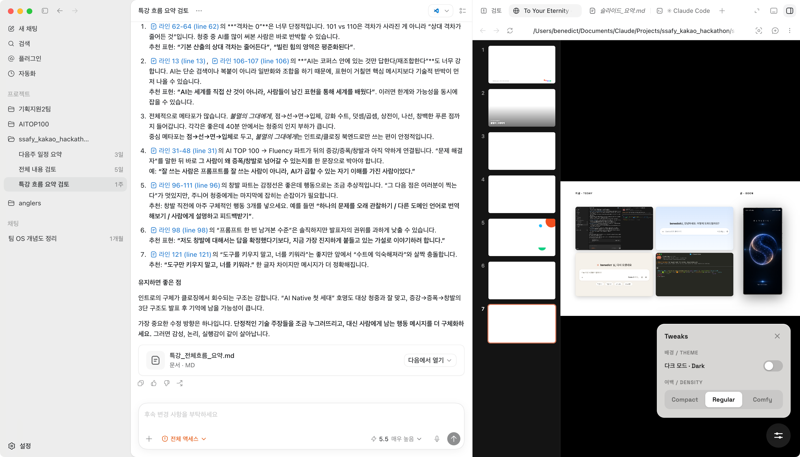
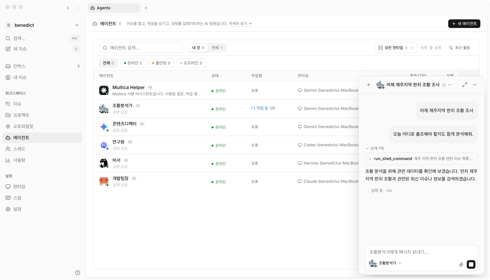
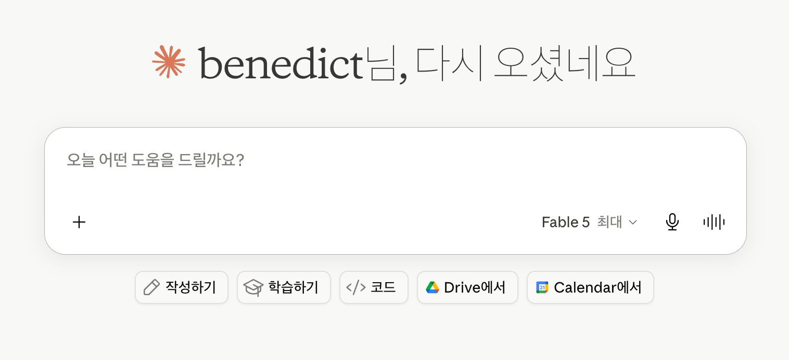
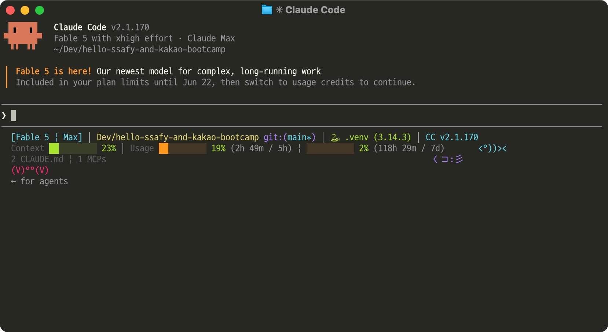
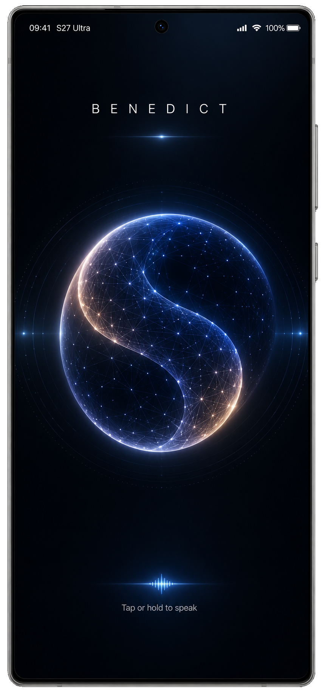
Speaking things into existence
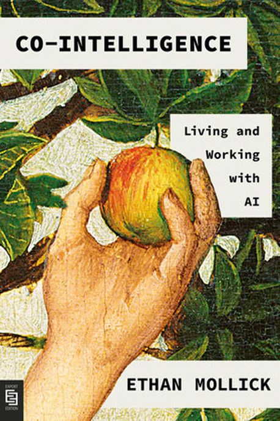
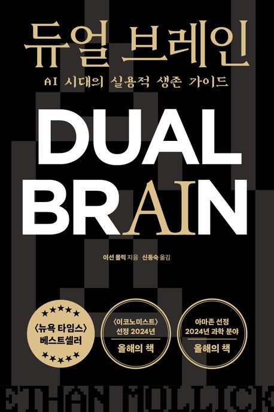
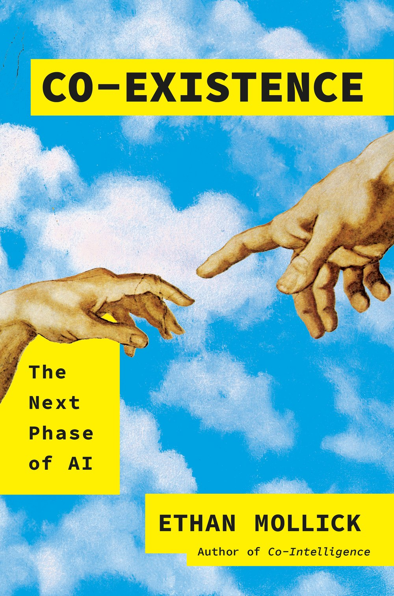
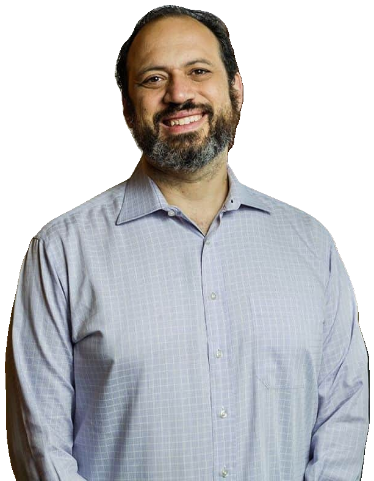
‘AI를 잘 쓴다’는 건
무엇일까?
올바른 것(right thing)을 올바르게(right) 불러내는 것.
이 질문을 안고, 제가 현장에서 찾아온 답을 따라가 봅니다.
Agentic Coding6 Principles & 28 Practices
바이브 코딩을 넘어, 에이전트 코딩으로
생성형 AI와 코딩 에이전트를 통해 생산성은 극대화하되, 위험을 관리하고 코드 품질·보안·유지보수의 책임을 지키는 구체적 지침
“이거 챗지피티가 만든 코드인데요?”
‘AI를 잘 쓴다’는 건, 결국
문제 해결자가 되는 것!
정의 · 협업 · 결정 · 검증
찾던 ‘AI 실력자’는,
이렇게 일하는 사람이었다
문제를 명확히 정의
Define the problem주어진 문제가 아니라, 무엇을 풀지부터 스스로 규정한다.
AI를 동료로 협업
Collaborate단순한 도구가 아니라, 함께 일하는 동료로 삼아 협업한다.
최적의 의사결정
Decide & verify매 순간 더 나은 선택을 내리고, 의심하고 검증해 끝까지 책임진다.
AI Fluency
잘 쓰는 사람은 무엇이 다른가
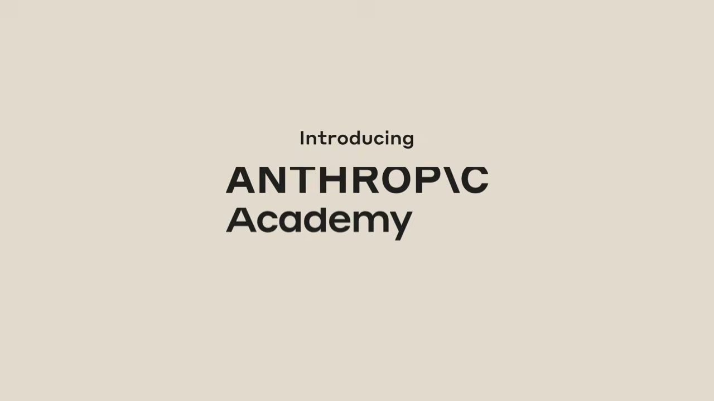
4D Framework
anthropic.com/ai-fluency원하는 걸 명확히 설명한다.
Augmentation
10이 110이 되는 순간
AI는 아이언맨 수트와 같다
사람의 역량에 더하기로 얹히는 증강 — 입는 순간 10이 110이 된다
60에 환호하지 말고,
110을 향해
나만의 희소가치를 만들 것.
수트는 진화를 멈추지 않는다
AI는 너무나 빠르고 가파르게 발전하고 있다
이전 세대의 100%가, 다음 세대엔 딸깍.
Amplification
같은 AI, 더 벌어지는 격차
AI는 역량을 더하고, 곱한다
AI가 역량을 ＋ 더한다
내가 잘 모르는 도메인에서는 증강으로만 작용한다
AI가 역량을 × 곱한다
내가 잘 아는 도메인에서는 증폭으로도 작용한다
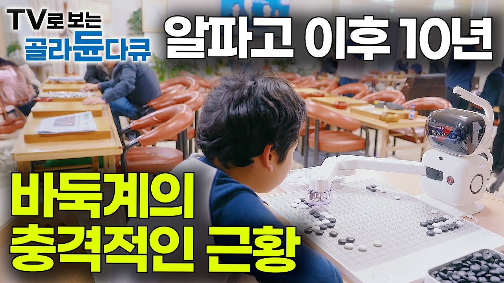
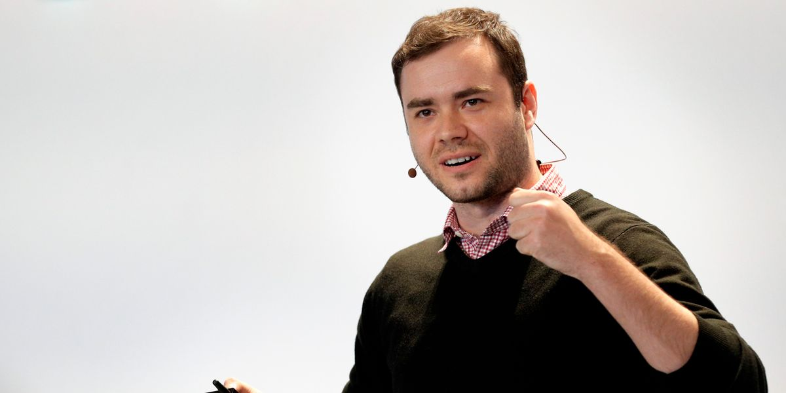
"You can outsource your thinking,
but you can't outsource your understanding."
Andrej Karpathy · Anthropic
Emergence
세상에 없던 무언가가 태어난다
창발이란 무엇인가?
세상의 점 · 선 · 면 · 입체를 이어서, 세상에 없던 새로운 연결을 만들어 내는 것.
Project
Glasswing
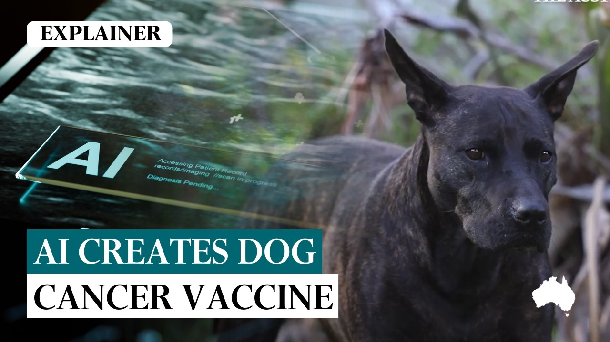
AI가 백신을 만든 게 아니다.
서로 떨어져 있던 세 개의 점이 이어진 것이다.
To Your
Emergence
For Your Augmentation
유창성 키우기
For Your Amplification
나만의 이해를 쌓아, 나의 점 키우기
For Your Emergence
배우고, 이해하고, 연결하기.
For Your Own Dot
더 넓고 다양한 시야로 세상을 보며, 사람만이 그릴 수 있는 나만의 점 만들기.
Free your mind.
감사합니다
Thank you — 함께 가봅시다.